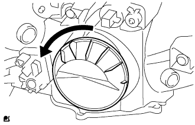

|
Remove the front turn signal lamp valve with the front turn signal lamp socket.
Remove the front turn signal lamp valve from the front turn signal lamp socket.
Headlamp ASSY decomposition |
| 1. Remove the front turn signal lamp valve |
|
Remove the front turn signal lamp valve with the front turn signal lamp socket.
Remove the front turn signal lamp valve from the front turn signal lamp socket.
| 2. Remove the clearance lamp valve |
 |
Remove the clearance lump valve together with the clearance lamp socket.
Remove the clearance lump valve from the clearance lamp socket.
| 3. Remove the head lamp socket cover (discharge headlamp) |
|  |
Turn the socket cover in the direction of the arrow in the figure and remove it.
| 4. Discharge headlamp valve removed |
Turn the socket part of the Light Control Composer in the direction of the arrow in the figure.
 |
Press the set spring as shown in the figure to remove the discharge head lamp valve.
| 5. Head lamp light control computer ASSY removes (discharge headlamp) |
Remove the four screws and connectors and remove the headlamp light control computer ASSY.
The left and right adjustments of the screws are turned left to make a gap between the socket of the light control computer.
Remove the light control computer.
| 6. Remove the head lamp socket cover (halogen headlamp) |
Remove the head lamp socket cover.
| 7. Remove the headlamp No.1 valve |
Press the set spring as shown in the figure to remove the head lamp valve.